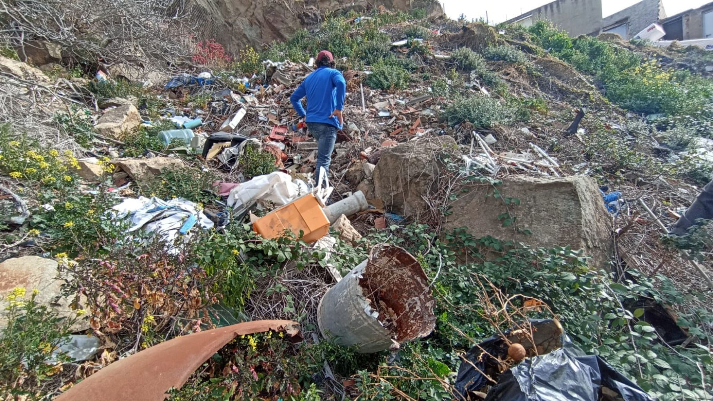

Encara no hi ha data d’inici, però l’Ajuntament de Barcelona ja treballa per engegar la neteja de les vessants de Collserola convertides en abocador des dels anys seixanta. Així ho va explicar dilluns al ple de Nou Barris el regidor del districte, Xavier Marcé, com a resposta a un prec de Barcelona en Comú. Al darrere de tot plegat hi ha la campanya “Collserola sense abocadors”, creada al casal 3 Voltes Rebel i conformada per diverses entitats, i que ha identificat mitja dotzena d’abocadors il·legals entre Canyelles i les Roquetes.
Segons va explicar Marcé, s’ha començat per identificar, conjuntament amb el Consorci del Parc de Collserola, els espais i la titularitat d’aquests terrenys, i la idea és començar a retirar el més aviat possible la runa i brossa acumulada durant dècades a marges. “De vegades és complicat definir si és municipal o no el terreny, però ho assumirà l’Ajuntament perquè és l’única manera de posar-hi remei. I és evident que aquests espais absolutament inacceptables no poden continuar així”, va apuntar el regidor de Nou Barris.
Tot i això, la campanya “Collserola sense abocadors” encara no vol cridar victòria i es mostren recelosos. Volen fets, no paraules. Per això, han explicat a betevé que no rebaixaran la pressió perquè temen que el procés es pugui allargar si s’ha de contractar personal especialitzat per retirar fibrociment i altres residus, i tractar-los adequadament després. De fet, s’han convocat aquest dijous per avaluar noves accions reivindicatives.
Altres notícies d'interès